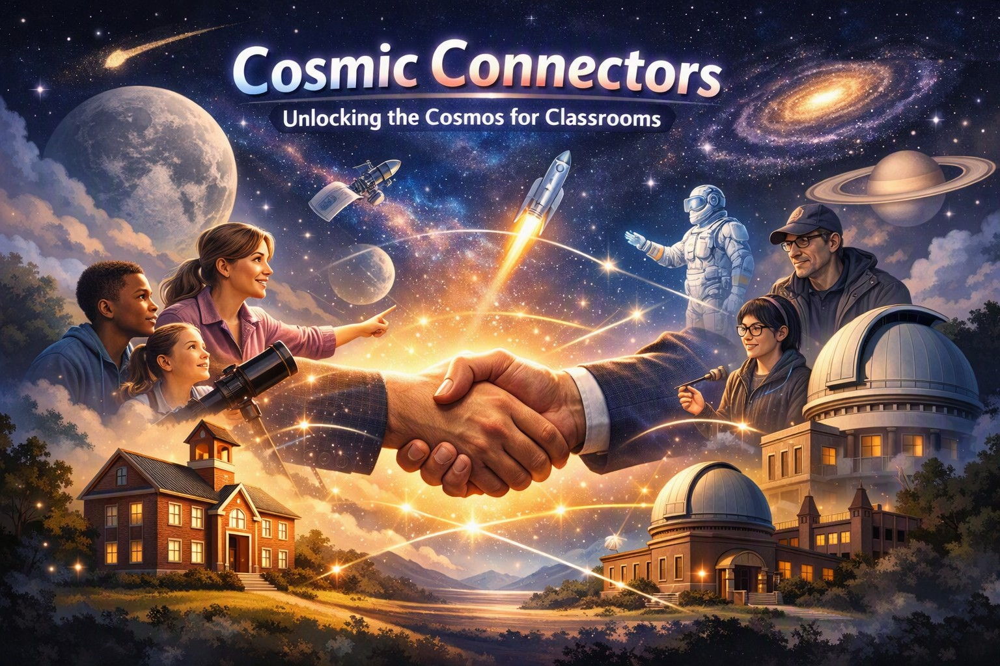
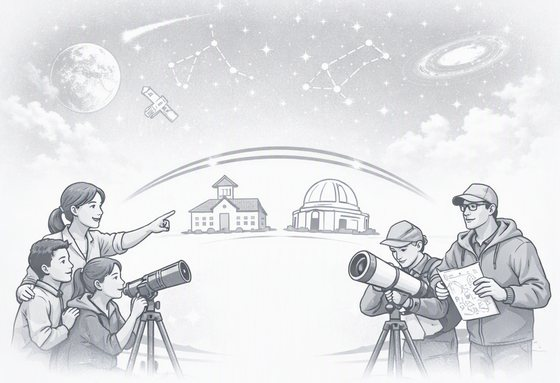

Unlocking the Cosmos for Classrooms
A new space race is underway, and today's students will be the ones who lead it. Cosmic Connectors links schools with astronomy clubs, universities, and space fans who have telescopes and expertise to share.
The future is being built in space, but telescopes are expensive and many schools can't afford them. Meanwhile, great equipment often sits unused. We bring the two together so students can see the Moon, the planets, and the stars up close.
Title 1 schools get first preference, and every school gets a chance. If your school qualifies, just check the box when you make a request.
Cosmic Connectors: sharing the sky, one classroom at a time.

New here? Choose your role.
Teachers and school staff
Clubs, universities, and space enthusiasts